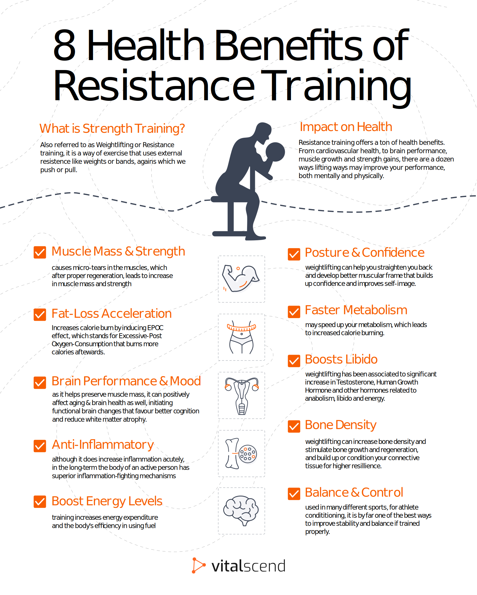

Why strength train
Strength training, often synonymous with weightlifting and resistance exercises, offers a myriad of benefits that go beyond mere muscle building. One of the most profound advantages is its impact on overall health. Regular strength training helps in building and maintaining lean muscle mass, which is crucial for a healthy metabolism and effective weight management. This form of exercise strengthens bones, reducing the risk of osteoporosis, and enhances joint flexibility, thereby decreasing the likelihood of injuries. Furthermore, it has been shown to improve cardiovascular health by reducing blood pressure, cholesterol levels, and inflammation, all of which are vital for preventing heart disease.
Beyond health benefits, strength training significantly contributes to wellness and performance in daily activities and sports. It enhances functional strength, making everyday tasks such as lifting, carrying, and climbing easier and safer. For athletes, it improves power, speed, and endurance, leading to better performance and reduced injury risks. Additionally, strength training has aesthetic benefits, sculpting and toning the body, which not only boosts confidence but also supports a positive self-image. The mental benefits are equally important, as regular exercise has been linked to reduced symptoms of depression and anxiety, improved cognitive function, and enhanced overall mood, making strength training a cornerstone of a balanced, healthy lifestyle.
"Strength does not come from the physical capacity. It comes from an indomitable will." - Mahatma Gandhi
Building strength enhances not just your physical health, but also boosts your energy levels, improves mental clarity, and fosters stronger, more resilient relationships through increased confidence and overall well-being.
Cardio is more than just buring calories
Cardio exercises, such as running and steady-state activities like walking, are essential components of a well-rounded fitness regimen that offer far more than just calorie burning. Engaging in regular cardiovascular exercise strengthens the heart and lungs, improving overall cardiovascular health and increasing endurance. This not only supports the body's ability to perform daily tasks with greater ease but also significantly reduces the risk of chronic conditions such as heart disease, hypertension, and type 2 diabetes. Running, with its higher intensity, enhances aerobic capacity and builds stamina, while steady-state cardio like walking provides a low-impact alternative that is gentle on the joints, making it suitable for individuals of all fitness levels.
Cardio exercise is also a powerful tool for mental health and cognitive function. It promotes the release of endorphins, which are natural mood lifters that can help reduce stress, anxiety, and symptoms of depression. Moreover, regular cardio has been shown to improve sleep quality, boost memory, and enhance overall mental clarity. It's an opportunity to connect with nature, clear your mind, and experience a sense of accomplishment. Therefore, cardio is much more than a method to burn calories; it is a holistic activity that enriches the mind and body, fostering a balanced and vibrant lifestyle.
The most beneficial new goal is one you can stick to, so make it fun!
To go places and do things that have never been done before – that’s what living is all about.Questions to ask yourself on your jouney:
What are my fitness goals, and why are they important to me? Understanding your goals and their significance helps keep you motivated and focused. How will I measure my progress and success?
Defining metrics for progress ensures you stay on track and can celebrate achievements. Is my diet supporting my fitness goals? Nutrition plays a crucial role in achieving fitness objectives, making it essential to evaluate your eating habits. What challenges have I faced in the past, and how can I overcome them now?
Reflecting on past obstacles helps you devise strategies to overcome them and avoid repeating mistakes. Am I balancing my fitness goals with other aspects of my life? Ensuring balance prevents burnout and promotes a sustainable fitness routine integrated with your overall lifestyle.